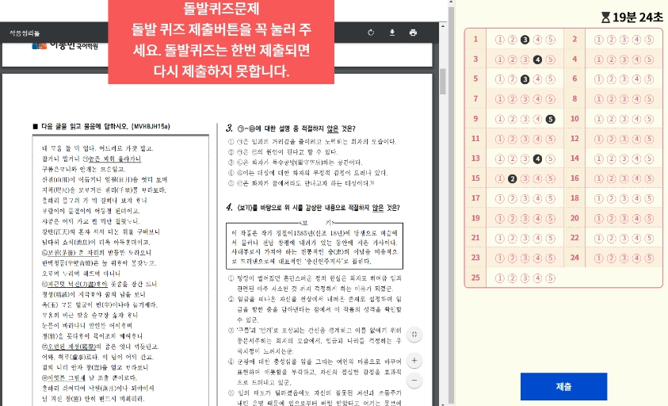

PSD 현장 원격강의란?
-
영상링크만을 학생들에게 전달하는 방식이 학생들이 강의를 시청하기에 용이하나,
강의를 정해진 시간에 시청하지 않아 발생하는 문제가 발생할 수 있습니다.
PSD는 링크를 제공하지 않음으로써 영상을 정해진 시간에 시청하게 하여 이러한 문제를 해결하고
현장강의 가능한 기간과 그렇지 않은 기간에도 동일한 스케줄을 유지하게 합니다.
학원에 등록할 당시 부여된 코드를 통해 홈페이지에 가입하고
로그인을 하면 수강 가능한 소속반을 입장할 수 있습니다.※ 강의실 입장은 해당반 학생들만 입장이 가능하기 때문에
특별한 사정으로 타 반의 수강을 진행해야 하는 학생들은
사전에 담당조교나 선생님들을 통해 전출신청을 해주셔야 합니다. -
출석은 강의실 입장 후 자동으로 학생명 옆 단추에 녹색 불이 들어오며 확인합니다.
강의영상이 시작된 이후에 출석하면 지각으로 노란색 불이 들어오며,
지정 시간 안에 출석이 이루어지지 않으면 붉은색으로 결석처리 됩니다.
오프라인 현장강의와 마찬가지로 강의시간 10분전에 입실이 가능합니다.과제는
과제제출 버튼을 눌러 과제 내용을 업로드 하며 역시 강의시작 10분전에 업로드 해야 합니다.
현장에 참석한 학생들은 현장에서 바로 과제를 걷어 과제 검사가 시작됩니다.
이미 업로드된 과제를 참고하시려면 “학년별 게시판_과제제출 게시글”을 참고하시기 바랍니다.학생별 과제업로드 내용은 로그인하지 않고도 모든 학생들과 학부모님들께서 확인하실 수 있습니다.
학생들은 본인의 과제의 수행수준을 보다 신경써서 진행하게 되고
실제로 ALL A를 받은 학생의 과제수행수준을 참고하여 학습의 수준을 높이기도 합니다.
B와 C를 받은 학생들은 과제방식이 잘못된 부분에 대해 확인하고 다음 과제에 반영할 수 있습니다.즉시 과제검사 결과 노출확인
학생들이 강의영상을 수강하고 있는 시간에 담당선생님과 멘토조교샘이 업로드 된 과제내용을 면밀하게 확인하여
해당 영상강의 하단에 학생들의 과제 검사 결과를 공개합니다. -
실시간 강의에서도 질의응답이 가능하며, 사전 촬영된 강의를 수강하는 경우에는 해당 선생님께서 직접 채팅 창을 통해 질문이 가능합니다.
사전 촬영된 강의영상을 수강하는 경우에도 강의의 속도를 조절할 수 없으며,
담당 선생님께서 송출하는 강의를 제어하여 학생이 스스로 중간에 강의를 넘겨 볼 수 없습니다. -
영상 시청 도중 갑작스럽게 돌발퀴즈가 실시됩니다.
강의 내용과 관련된 테스트를 통해 해당 강의에 대한 집중력을 높입니다.
제한된 시간 안에 OMR 카드에 정답을 입력하고 제출 버튼을 누르면 하단 상황판에 해당학생의 점수가 바로 계산되어 노출됩니다.
강의에 집중하지 못하여 퀴즈시간 안에 제출하지 못하면, 시험지가 사라지게 되어 점수를 받을 수 없습니다. -
매 주간 강의실 안에서의 학생의 활동내용(출석/과제/테스트)는 주차별 정보로 누적 저장되어 학생의 학습태도를 확인하는 자료로 활용됩니다.
학생의 강의 이해력이나 학습태도에 관해 수업 이후 촉은 상황에 따라 수업진행 중에도 상담이 이루어 질 수 있습니다. -

하원노트 단추를 통해 학생들은 당일 강의한 내용 중 강의종료 직전에 해당 선생님이 요구한 강의내용 필기부분을 다시 업로드 해야 합니다.
이를 통해 학생들이 총 학습시간 어느 부분에서도 긴장감을 놓치지 않고 학습에 집중할 수 있도록 하며,
하원과정의 필기 내용을 통해 학생들의 이해가 정확히 이루어졌는지를 확인합니다.
“학년별 게시판_하원인증”을 통해 확인하실 수 있습니다. -
강의가 모두 종료되면 “학년별 게시판_진도과제”에 해당소속반의 진도와 다음주 과제가 정리되어 올라갑니다.
과제부분에 대해 놓친 학생이 있다면 그 다음주 과제를 시작하기전에 확인할 수 있도록 합니다. -
PSD는 국어혁명학원이 오프라인 현장강의 관리 Flow를 그대로 온라인화 한 플랫폼입니다.
이를 통해 집합금지 기간에도 일부허용기간에도 현장강의가 가능한 시기에도 동일한 과정과 방식을 통해
학생들의 학습에 대한 태도가 달라지지 않고 지속적인 학습에 임할 수 있도록 개발되었습니다.
내신과 수능강의 뿐아니라 특별한 보충이나 피드백 등의 수업에도 적극적으로 활용하여 강의가 진행될 예정입니다.